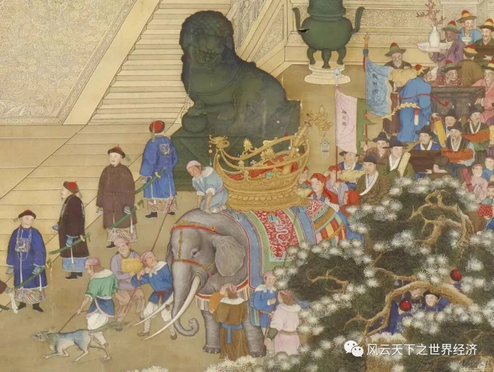
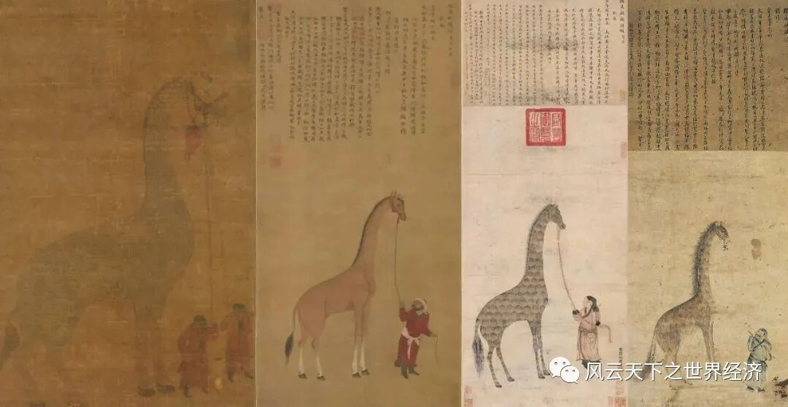

写下这些文字的是我《世界经济史》课堂上聪慧的同学们 而这个系列早在2014年首次开课时就已预约 八年后当她以如此风姿脱岫而出时 我体会到了信念被兑付后的小欣喜 深沉的经济史与年轻的思考在这里相遇 激荡出灵动的弦歌 以及渐次苏醒的思想 为这个“小风云”系列 我特意选了“总有人正年轻”这样一个名字 其含义正如你所料，这门课虽然以史为名 但是我们真正寄予其中的是未来 一万两千年世界经济史风云浩荡 恰似过去留给我们的一个巨大谜面 关于人类财富增长秘密的蛛丝马迹隐没其中 等待年轻的他们去破解 ——鲁晓东
麒麟降临：明代的国际贸易
倘若曼昆成为了明太祖的经济顾问，仅凭“trades can make everyone better off”就会被斩立决。
蛮夷戎狄vs.贸易伙伴：明初中外贸易的“朝贡”模式
明太祖认为周边的国家都位置偏僻、土地瘠薄、人口贫乏。他眼中的国际关系是命令-服从式的领主国与藩属国的关系，因此平等贸易不复存在、“朝贡”体制取而代之。
《皇明祖训》曰：“四方诸夷皆限山隔海、僻在一隅，得其地不足以供赋，得其民不足以供役。……海外诸国入贡，许附载方物与中国贸易。因设市舶司，置提举官以领之。所以通夷情、抑奸商、俾法禁有所施，因以消其衅隙也。洪武初设于太仓黄渡，寻罢。复设于宁波、泉州、广州。宁波通日本、泉州通琉球、广州通占城、暹罗西洋诸国。”

万国来朝图
管理朝贡的市舶司将对进贡时间、入贡人数或船数施以种种限制，而在不同地方分设的市舶司对应管理不同的藩属国。来朝贡的国家将获得朝廷发放的“勘合”文书以承认船只贸易的合法性。贡品分为三类：“正贡”就是藩属国国王进贡的地方名产；“附来货物”则是国王附带品；有时也有使臣自进货物。其中只有“附来货物”可以在中国贸易，其他名义的货物均作进贡用。朝廷不仅对进贡的物品有回赐，还按照职级赏赐来觐见的贡使。
此时的贸易政策实则从属于外交或军事政策，主要的导向是怀柔而非取得经济利益。具体而言，琉球、朝鲜于会馆开市时长不限，其余属国限二日或五日；鞑靼、瓦剌可直接在会馆外与官员军民交易，无须商人等居中作间。不论是在会馆买卖或于市舶司所在地交易，均不向外商征税。相反地，明初以降屡下禁海令，严禁本国商人出海从事商业活动、甚至连普通百姓下海谋生也不允许，以免“通番”或是引发倭患。
花椒·苏木·“麒麟”：明成祖时期郑和下西洋的动力
在朝贡制度下，封建君主鼓励外贸活动的动力是享受“万邦来朝”君临天下的快感；外国则借此谋求大国政治势力的庇荫，积累资本则在其次。
朝贡制度的阻力来源却比动力多：最直接的是“有供有市，无供无市”的世界观，所有试图与中国贸易往来的国家都必须承认中国的藩属国地位——也就是中国皇帝君临天下的地位，那些得不到本国政权支持的外国商人自然就被这一要求挡在通商之门外。其次，外国即使委曲求全、大费周折地进行朝贡，所获得的经济利益也未必有多么可观。尤其是在中华文化圈之外的国家并没有强烈的来朝进贡之意，同时遥远的地理距离与有限的技术条件也限制了他们取得“勘合”、进行合法的商业活动的可能。
于是郑和便带领着当时最先进的“宝船”及配置的战船、运水、运粮专属船队出发了。皇权的海风和历史的洋流驱动着他前往异国，招谕“番邦”前来朝贡。若招谕不成，满载士兵的战船立刻靠岸，在港口上恐吓当地政权。如此这般胡萝卜加大棒之后，“外邦入贡，乃彼之利。一则奉正朔以威其邻，一则通贸易以足其国。” 郑和的宝船上满载着沿途国家的使者和特产踏上归程。那么受朝贡制度驱使的郑和宝船又带回来了什么奇珍呢？且选取花椒、苏木和长颈鹿这三样来逐一说明。
当时中国所需要的进口大宗商品以花椒和苏木为代表。前者是民生必需品；后者是珍贵的红色染料，因明太祖推广植棉而需求量陡增。受限于海禁政策，这两样物品仰赖于朝贡。当朝贡供给有限时，郑和下西洋直接展开官方的对外贸易：“正统元年（1436）三月甲申，敕王景弘等，于官库支胡椒、苏木等共三百万斤”，在下西洋结束三年后官库里仍然储存着大量的花椒和苏木。
苏木
长颈鹿的故事则带有一些传奇色彩。郑和第四次航海（1414-1415）的目的地之一是孟加拉湾的榜噶剌，由杨敏自满剌加（马六甲）率领分舟宗前往。杨敏在出航的第一年就带回一只长颈鹿，并以“麒麟”的名义在当年九月二十日进呈给皇帝。历史学家就长颈鹿到底是不是《春秋》中“鲁哀公十八年，西狩获麟”的麒麟展开了诸多论战，但有据可查的记载是长颈鹿确实在宫中引起了一阵骚动，并没有更多证据证实长颈鹿就是儒家典籍中的神兽麒麟。

瑞应麒麟图
郑和下西洋的本质是受经济因素驱动的外交活动。“自永乐改元，遗使四出，招谕海番，贡献迭至，奇货重宝，前代所希，充溢府库。贫民承令博买，或多致富，而国用亦羡裕矣”，遣使招贡短期来看立竿见影；但在下西洋停止后，大宗商品进出口贸易便难以为继。更重要的是郑和听令于朝廷，下西洋与其说是官办的国际贸易，不如说是代朝廷出海采买珍玩，与百姓日常生活相脱节。
在明成祖时期建立宗藩关系的国家:
类别朝贡国家
附庸国
琉球
勘合国
占城、真腊、暹罗、浡泥、爪哇、满剌加、苏门答腊、苏禄三王（东王、西王、峒王）、古麻剌朗、锡兰山、古里、柯枝等共十四国
非勘合国
随郑和舰船入贡的国家，共计婆罗、南渤利（南巫里）、彭亨、急兰丹、阿鲁、合猫里、冯嘉施兰、千里达、失剌比、碟里、日罗夏治、吕宋、旧港、大葛兰、小葛兰、西洋琐里、琐里、加异勒、阿拨把丹、甘把里、忽鲁谟斯、比剌、溜山、孙剌、木股都束、麻林、剌撒、祖法儿、沙里湾泥、竹步、榜葛剌、天方、黎伐、那孤儿等共三十四国
有限勘合国
日本
肉食者鄙：“海禁”的结构性难题
“海禁”的目的是禁绝民间国际贸易：“凡将马牛、军需、铁货、铜钱、段匹、紬绢、丝锦，私出外境货卖，及下海者，杖一百”。支持海禁派的观点列举如下：民间进行国际贸易有可能与境外势力联合谋反；民间通过国际贸易购买兵器等违禁品。相应地，反对海禁派的观点有：
基于“夷夏互通有无”为基础的贸易难以禁绝；商船为防海盗均备武装，强行禁商有可能会将商人逼成流寇。漳、潮乃滨海之地，广、福人以四方客货预藏于民家，倭至，售之。倭人但用银置买，不似西洋人载货而来，换货而去（《武备志》卷214）。
我朝书生辈，不知军国大计，动云禁绝通番以杜寇患。不知闽、广大家正利官府之禁，为私占之地。如嘉靖间，闽、浙遭倭祸，皆起于豪右之潜通岛夷。始不过贸易侔利耳，继而强夺其宝货，勒不与值，以故积愤称兵，抚臣朱纨谈之详矣（沈德符《万历野获编》卷12）。
以上两段史料均能证明海禁政策下的黑市贸易的隐蔽性：一方面闽越百姓能充分利用信息不对称的优势，将贸易藏至家中进行；另一方面闽越有权势的人家也会与日本人相勾结，以图从贸易中牟利。是因为统治者的目光短浅所以才有三番五次的海禁政策吗？并非如此，康熙皇帝在1684年便评论道：“向虽严海禁，其私自贸易者何尝断绝？凡议海上贸易不可行者，皆总督、巡抚自图射利故也。”采取海禁政策而不能有效遏制国际贸易的原因就在于当地官员的贪腐逐利之心。
麒麟何处：贸易使明朝变得更坏了吗？
明代的国际贸易可以说是兼具天时（远洋航行技术）、地利（需要的货物分布在航程可及之处）、人和（掌握航行技术与具备贸易头脑的人才）三要素，然而学界对此的臧否并不如白纸黑字的海禁政策那般态度分明。
我认为，明代的官方贸易并不符合新古典主义经济学的价值观：“朝贡”体系本身是一个政治机器，少得可怜的经济利益就如同润滑油，偶尔让庞大而快要散架的老机器吱呀运转几个循环。相对地，彭慕兰则指出这种贸易有助于塑造具有共同偏好和交易模式的庞大市场，同时“朝贡”所联系的买卖双方因此进行（往往并不平等的）交流、为“朝贡”体系所规训。
即使传说中天下大治便会现身的“麒麟”被送给了永乐帝，然而从此以后它便在华夏大地销声匿迹，直到轰开“五口通商”之门的铁炮声响起。